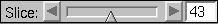
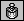
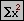
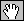
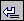
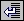

- Slice slider: 
Allows the user to change the slices that are displayed and can be
edited. The displayed number is the number of the editable slice. If
this number is n and the editable slice is the upper one,
slices n and n-1 are shown. If the editable slice is the
lower one, the displayed slices are slices
n and n+1. - Zoom in button:
Increases the size of the image. - Zoom out button:
Decreases the size of the image. - Zoom label:
Shows the current zoom factor. E.g., a zoom of 2:1
means that 2 pixels on the screen correspond to one pixel of the
original data set (magnification), while 1:4 would mean that four
pixels of the data set correspond to one pixel on the screen. - Gravity centers button: 
Sets the gravity centers alignment as the current alignment algorithm. - Least squares button: 
Sets the least squares alignment as the current alignment algorithm. - Landmarks button:
Sets the landmarks alignment as the current alignment algorithm. When this
is the active align mode, the landmarks will be displayed for the
current slices. If one of the other two algorithms is selected,
the landmarks are not shown. The selected algorithm is used when the
Align current slices or Align all slices
button is pressed or the corresponding menu items are chosen. - Edge detection button:
Sets the edge detection alignment as the current alignment algorithm. - Edit landmarks mode:
Sets the active edit mode to be editing landmarks. When this is the
active edit mode, the landmarks that have been already defined can
be moved/removed and new landmarks can be defined (see
Image Viewer section). This mode can be
activated only only when Landmarks button is ON (i.e.
the active align mode is landmarks alignment). - Edit slice mode: 
Sets the active edit mode to be editing slices. This means that
the editable slice can be translated/rotated. - Lower slice:
This button forces the lower slice of the two displayed
slices to become editable. - Upper slice:
This button forces the upper slice of the two displayed
slices to be editable (default).
The editable slice can be translated and rotated and landmarks can be
defined for it. - Mirror button:
A mirroring transformation is applied to the editable slice. - Align current slices: 
The two currently displayed slices are automatically aligned using
the selected algorithm. - Align all slices: 
All slices of the given 3D data are automatically aligned using
the selected algorithm.